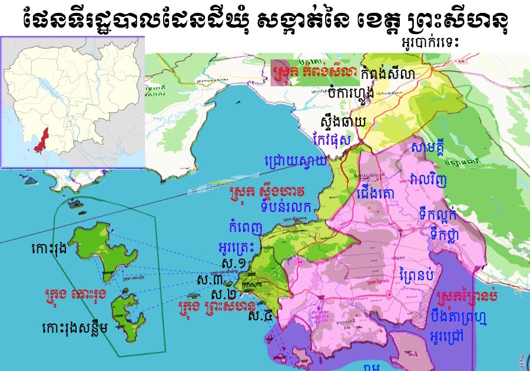
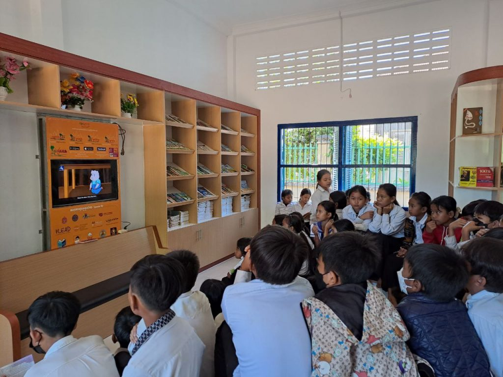
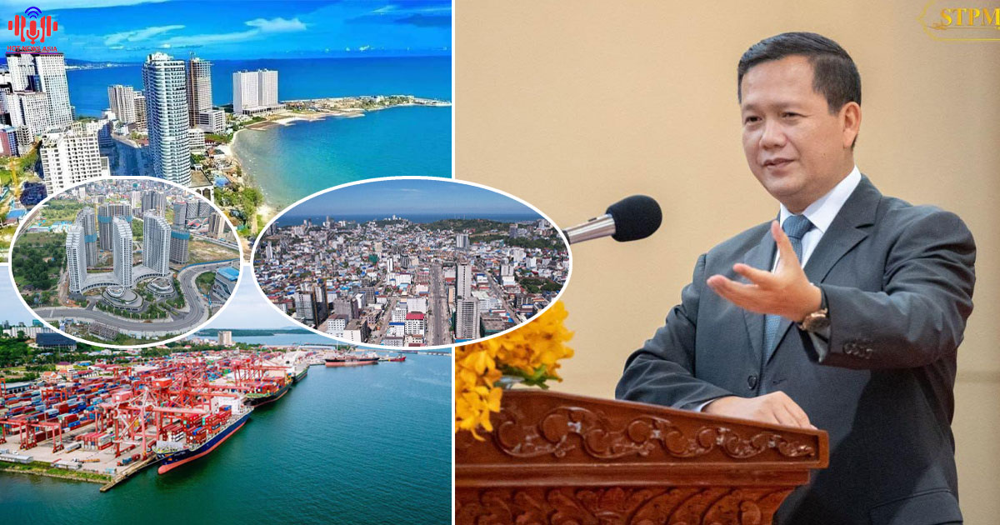
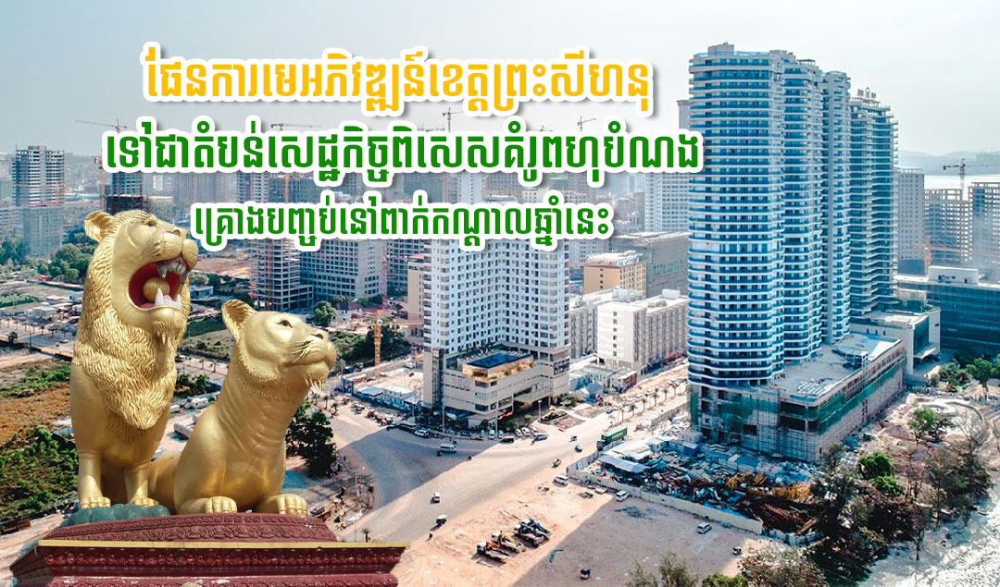

សូមស្វាគមន៍មកកកាន់
ខេត្តព្រះសីហនុ

ខាងក្រោមនេះអ្នកនឹងអាចយល់ដឹងអំពីព័ត៌មានក្នុងខេត្តព្រះសីហនុ
មាតិការ
១.ប្រវតិ្តខេត្តព្រះសីហនុ...................................................................................។
២.ទីតាំងភូមិសាស្ត្រ.........................................................................................។
៣.ប្រជាជន និងវប្បធម៌..................................................................................។
៤.ស្ថាបត្យកម្ម និងសំណង់សំខាន់ៗ................................................................។
៥.ការអប់រំ និងស្ថាប័នសិក្សា...........................................................................។
៦.សេដ្ឋកិច្ច........................................................................................................។
៧.ទេសចរណ៍...................................................................................................។
៨.ការអភិវឌ្ឍនាអនាគត..................................................................................។
ប្រវតិ្តខេត្តព្រះសីហនុ
មាតិកាខេត្ត ព្រះសីហនុ មានប្រវត្តិសាស្ត្រយូរអង្វែង ត្រូវបានគេចាត់ទុកជាតំបន់សំខាន់សម្រាប់ ពាណិជ្ជកម្មតាមសមុទ្រ និងកសិកម្មទន្លេ។ ខេត្តនេះត្រូវបានគេស្គាល់ក្នុងសម័យអាណានិគមបារាំង និងបន្ទាប់មកសង្គ្រាមថៃ-កម្ពុជា ដោយសារតំបន់មាន កំពង់ផែធំ និងឆ្នេរសមុទ្រស្រស់ស្អាត។ បន្ទាប់ពីការអភិវឌ្ឍន៍សន្តិភាព ខេត្តព្រះសីហនុក្លាយជាតំបន់សំខាន់សម្រាប់ ទេសចរណ៍, កសិកម្ម, និងពាណិជ្ជកម្មសមុទ្រ។
ទីតាំងភូមិសាស្ត្រ
មាតិកាខេត្ត ព្រះសីហនុ ស្ថិតនៅភាគខាងត្បូងនៃប្រទេសកម្ពុជា ខាងលិចជាប់មហាសមុទ្រកម្ពុជា។ ជាប់ខេត្ត កោះកុង ខាងជើង និងខេត្ត ត្បូងឃ្មុំ ខាងជើង។ ទីរួមខេត្តគឺក្រុង ព្រះសីហនុ (Sihanoukville), ជាគន្លងសំខាន់សម្រាប់ពាណិជ្ជកម្ម និងទេសចរណ៍។ ភូមិសាស្ត្ររួមមាន ឆ្នេរសមុទ្រ, កោះតូចៗ និងព្រៃសមុទ្រ, ដែលសាកសមសម្រាប់ទេសចរណ៍ និងកសិកម្មទំនើប។
ប្រជាជន និងវប្បធម៌
មាតិកាខេត្ត ព្រះសីហនុ មានប្រជាជនប្រមាណ ជាង ២០០,០០០នាក់, ភាគច្រើនជាជនជាតិខ្មែរ និងជាពុទ្ធសាសនិក។ មានសហគមន៍ជនជាតិភាគតិចដូចជា ចាម និងវៀតណាម។ ជីវិតប្រចាំថ្ងៃរបស់ប្រជាជនផ្អែកលើ ទេសចរណ៍, នេសាទ និងសិប្បកម្មស្រុក។ ពិធីបុណ្យប្រពៃណីដូចជា បុណ្យចូលឆ្នាំខ្មែរ, បុណ្យភ្ជុំបិណ្ឌ និងបុណ្យអុំទូក តែងតែប្រារព្ធឡើងដោយភាពសាមញ្ញ និងសហសមាជិកសហគមន៍។
ស្ថាបត្យកម្ម និងសំណង់សំខាន់ៗ
មាតិកាខេត្ត ព្រះសីហនុ មានស្ថាបត្យកម្ម និងសំណង់សំខាន់ៗ ដូចជា វត្តបុរាណ, កំពង់ផែពាណិជ្ជកម្ម, និងអគាររដ្ឋបាលសម័យអាណានិគមបារាំង។ ការរួមបញ្ចូលរវាងសំណង់បុរាណ និងសំណង់ទំនើបធ្វើឲ្យខេត្តក្លាយជាតំបន់ទេសចរណ៍ប្រវត្តិសាស្ត្រ និងមានតម្លៃវប្បធម៌ខ្ពស់។
ការអប់រំ និងស្ថាប័នសិក្សា
មាតិកាខេត្ត ព្រះសីហនុ មានប្រព័ន្ធអប់រំចាប់ពីកម្រិតបឋមសិក្សា រហូតដល់វិទ្យាល័យ និងមជ្ឈមណ្ឌលបណ្តុះបណ្តាលវិជ្ជាជីវៈ។ មានសាលារៀនសាធារណៈ និងឯកជន ដែលផ្តល់ឱកាសសិក្សារសម្រាប់កុមារ និងយុវជនទាំងនៅក្នុងទីរួមខេត្ត និងតំបន់ជនបទ។
សេដ្ឋកិច្ច
មាតិកាសេដ្ឋកិច្ចខេត្ត ព្រះសីហនុ ផ្អែកលើ ទេសចរណ៍, ពាណិជ្ជកម្មសមុទ្រ និងកសិកម្មតូចៗ។ ផលិតផលសំខាន់មាន ត្រីសមុទ្រ, ផ្លែឈើ និងស្បៃទឹក, ដែលត្រូវបានចែកចាយក្នុងខេត្ត និងនាំចេញទៅខេត្តជិតខាង និងបរទេស។ ការអភិវឌ្ឍឧស្សាហកម្មទេសចរណ៍ និងកំពង់ផែធំជួយលើកស្ទួយសេដ្ឋកិច្ចក្នុងតំបន់។
ទេសចរណ៍
មាតិកាខេត្ត ព្រះសីហនុ មានទេសភាពធម្មជាតិ និងកន្លែងទេសចរណ៍ដូចជា ឆ្នេរសមុទ្រ, កោះតូចៗ, ភ្នំ និងទន្លេ, ដែលសាកសមសម្រាប់ទេសចរណ៍, កម្សាន្ត និងសិក្សាវប្បធម៌។ ភ្ញៀវអាចរីករាយជាមួយ អាហារសមុទ្រប្រពៃណី និងផលិតផលស្រុក ដូចជា ត្រី, ស្បៃទឹក និងផ្លែឈើ។
ការអភិវឌ្ឍនាអនាគត
មាតិកាខេត្តព្រះសីហនុមានផែនការអភិវឌ្ឍអនាគតផ្តោតលើ ទេសចរណ៍, កំពង់ផែពាណិជ្ជកម្ម និងកសិកម្មទំនើប។ គម្រោងរួមមាន ការកែលម្អបណ្ដាញផ្លូវ, ការអភិរក្សបរិស្ថាន និងការផ្សព្វផ្សាយទេសចរណ៍, ដើម្បីទាក់ទាញវិនិយោគ និងបង្កើនសេដ្ឋកិច្ច និងឱកាសការងារ។
